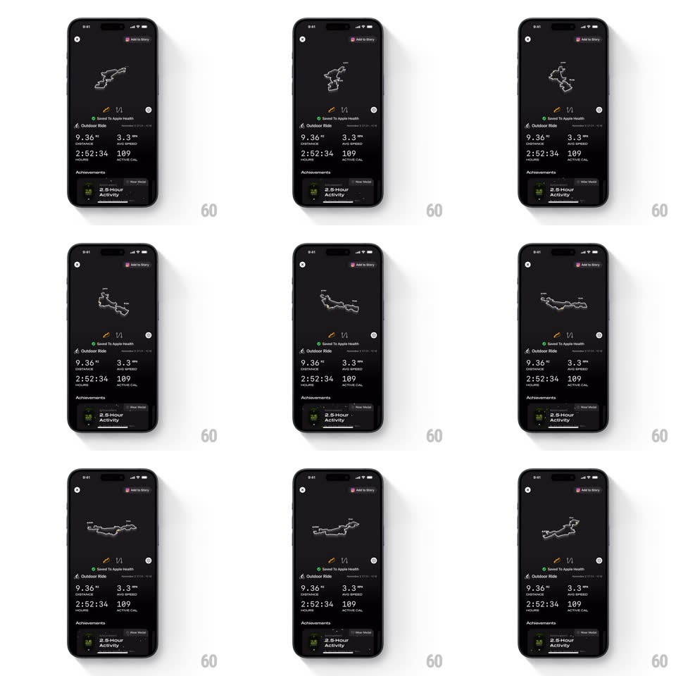

Media
Frame-by-frame

Rebuild this interaction 1:1: Any Distance's activity recap - a dark ride-summary screen whose route map renders as a 3D extruded path that rotates and tilts in response to drag gestures, above static ride stats and an Achievements card.

Rebuild this interaction 1:1: Any Distance's activity recap - a dark ride-summary screen whose route map renders as a 3D extruded path that rotates and tilts in response to drag gestures, above static ride stats and an Achievements card.
## Integration
Integration: stack-agnostic spec - springs given as stiffness/damping, timed motions as duration + curve; map every value to your framework and animation library of choice.
## Scene
Mobile screen, near-black background. Top: back chevron and "Add to Story" pill. Center: a glowing white GPS route line rendered in 3D over a dark map. Below: "Saved To Apple Health" confirmation, "Outdoor Ride" title with date, a 2x2 stats grid (9.36 MI distance, 3.3 MPH avg speed, 2:52:34 hours, 109 active cal), and an Achievements card ("2.5-Hour Activity" medal).
## Motion spec
Pattern: drag-driven 3D map rotation with inertial settle.
- The route model responds to horizontal drag by rotating around its vertical axis (1:1 tracking, ~0.5deg per px) and to vertical drag by tilting toward/away (~30deg pitch range).
- On release, rotation continues with inertia and eases to rest (decay ~0.94 per frame, no snap-to-angle).
- The route line is extruded with soft glow and distance markers (mile labels float above the path and rotate with it).
- Stats, title, and Achievements card below the map never move.
## Calibration
- Rotation must track the finger directly; lag or smoothing beyond a light inertial tail breaks the tactile feel.
- The model recenters its framing as it rotates - the route stays inside its viewport.
## Reduced motion
Static slightly-tilted 3D route view; drag rotates nothing.
## Don't miss
- The route line has mile marker labels attached to the path in 3D space.
- Background map stays dark and minimal - the glowing route is the only lit element.